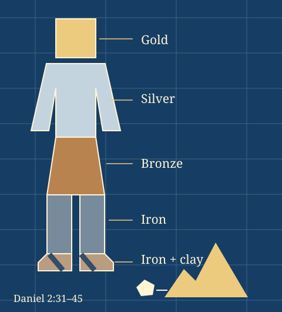

Israel, Covenant & Prophets / Lesson 3D
Daniel
Faithfulness in exile.
Hope beyond empires.
A foreign court. A dangerous decree. A kingdom that lasts. Explore how Daniel and his friends remain faithful when powerful rulers demand their loyalty.
Grades 6–12 · 50–70 minutes
Begin with a choice Explore the statue
Where Daniel fits
- Covenant
- Kingdom
- Exile: Daniel
- Return
- Jesus & the kingdom
Before: Judah loses its independence, and Judean exiles live under foreign rule. Here: Daniel serves in royal courts while remaining loyal to God. Ahead: Christian readers connect Daniel’s kingdom hope and the humanlike figure in chapter 7 with Jesus’ teaching about the Son of Man.
Big question: How can people remain faithful when they cannot control the ruler—or the outcome?
- Trace the movement from court stories to visions.
- Compare faithful choices using evidence from the passages.
- Distinguish a symbol, the text’s explanation, and a later interpretation.
1
Start with the people
A choice before the outcome
Read a situation, predict the response, then compare it with the passage. What does faithfulness look like when the outcome is uncertain?
Choose a response to compare it with the text.
Discuss: Where do you see conviction, respect, or a steady habit? Explain using a verse. Rescue in these stories does not promise that every danger ends safely.
2
Trace the whole book
Stories become visions
Choose a chapter. Read its passage in your Bible, then discuss the question. These summaries help you navigate; they are not Scripture quotations.
A first reading:
Court stories · 1–6
Visions · 7–12
0 of 12 chapters explored.
3
Daniel 2:31–45
A statue. A stone. A lasting kingdom.
Investigate the materials from head to feet. Predict what the stone will strike, then run the dream and compare the result with Daniel 2:34–35.
Start with the passage: only the head’s ruler is named here. Other empire names belong to interpretations.
Make a prediction, then send the stone.
Teaching diagram · Select a material
Select a material · Then run the dream
4
Read with evidence
What kind of claim is this?
A vision has an image, an explanation within the passage, and interpretations offered by readers. Practice telling them apart.
Image
What is seen in the vision.
Text’s explanation
What the passage says it means.
Later interpretation
An identification readers propose.
Choose a claim type and explain your reasoning.
Read a vision in three steps
Apocalyptic writing uses vivid symbolic visions to reveal God’s judgment and hope amid conflict. Daniel also contains prayers, wisdom, and court narratives.
1. Observe the image
In Daniel 2, list the statue’s materials and what happens to it. In Daniel 7, contrast the beasts with the humanlike figure.
2. Find the explanation
Daniel 2:37–45 explains successive kingdoms and an enduring kingdom from God. Daniel 7:17–18 identifies kingdoms and the holy ones who receive the kingdom.
3. Name your interpretation
Readers disagree about some empire identifications and prophetic timelines. Support a reading with the passage and state where it goes beyond the text.
Teacher extension: dating, traditions, and chapter order
The story is set in the sixth-century BCE Babylonian and Persian world. Traditional readings associate the book with Daniel in that era; many modern scholars date its final form to the second-century BCE persecution under Antiochus IV. Distinguish the narrative setting from the debated date of composition.
Chapters are not a straight chronological sequence: chapter 7 returns to Belshazzar’s first year, before the events of chapters 5–6. Darius the Mede’s historical identity is debated; do not simply equate him with Darius I.
This lesson follows the twelve chapters shared across Jewish and Christian Bibles. Catholic and Orthodox traditions also receive Greek additions, including Susanna, Bel and the Dragon, and prayers and songs associated with the furnace. Verse numbering can differ.
Read carefully: The furnace is the story of Shadrach, Meshach, and Abednego; Daniel is not named among those thrown in. Chapter 3:18 expresses loyalty even without rescue. Faithfulness is not a promise that every danger ends safely.
5
Bring it together
Check your reading
Make your case
Notes stay in this browser when storage is available.
A 60-minute classroom route
5 minutes locating exile in the Bible story; 10 predicting choices; 15 exploring the suggested chapters in pairs; 15 investigating the statue and sorting evidence; 15 checking understanding and writing a claim with a verse.
For a shorter session, use Daniel 3:16–18, the statue, and the final writing prompt. For an extension, compare chapters 2 and 7 or study Daniel’s prayer in chapter 9.
Read and continue
Use your classroom Bible for full passages. External reading links open only when selected.